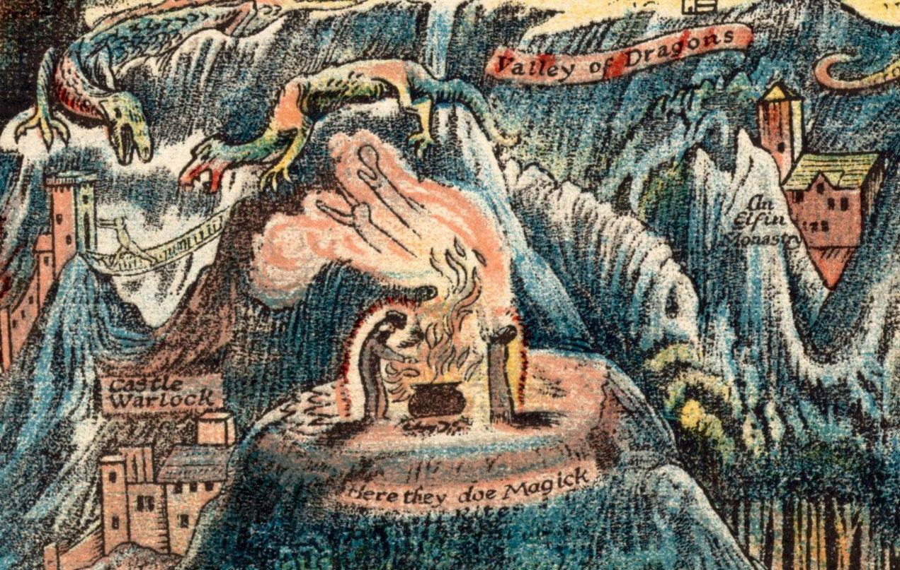

Chamanismo y Ritual
Descripción del curso
Este curso ofrece una aproximación al chamanismo desde una doble perspectiva: antropológica y vivencia. A diferencia de otros enfoques exclusivamente académicos o prácticos, aquí el chamanismo es abordado tanto como objeto de estudio y como experiencia viva.
Desde el diálogo entre la antropología y la práctica chamánica, se explorarán el símbolo, el ritual y las cosmovisiones (Filosofía) tradicionales como formas de conocimiento que articulan la relación entre el ser humano, la naturaleza y lo sagrado. El curso propone comprender el chamanismo no solo como una tradición ancestral, sino como una práctica que da soluciones alternativas generalmente en la salud y el bienestar del alma que continúa teniendo sentido en la experiencia contemporánea.
¿A quién está dirigido?
Personas interesadas en la espiritualidad, el simbolismo y las tradiciones ancestrales, que deseen aproximarse al chamanismo desde una mirada profunda, respetuosa y reflexiva. No se requieren conocimientos previos.
Temario
- ✦ ¿Qué es el chamanismo? Entre experiencia y estudio
- ✦ Cosmovisión, símbolo y relación con la naturaleza
- ✦ El ritual como práctica y como conocimiento
- ✦ Chamanismo en la actualidad: sentido y límites
Lo que aprenderás
- Comprender el chamanismo desde una doble mirada: antropológica y vivencial
- Reconocer el valor del símbolo y el ritual como formas de conocimiento
- Entender distintas cosmovisiones tradicionales
- Reflexionar sobre la relación entre ser humano, naturaleza y lo sagrado
- Analizar el lugar del chamanismo en la actualidad
Docente
Sergio Miranda; Antropólogo y Chamán, integra en su enseñanza la investigación académica con la experiencia directa en tradiciones chamánicas. Su enfoque propone un diálogo entre conocimiento teórico y vivencial, ofreciendo una comprensión profunda y situada del chamanismo.